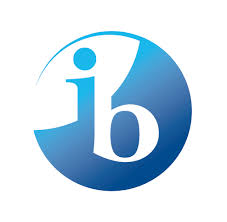

Milestones
-
2018-Present
Technical Lead, Amuse Labs
Primarily work on full-stack development of PuzzleMe – an online end-to-end platform for 'smart games' -- crossword, sudoku, codeword, word-search, quiz, jigsaw.
A few customers of PuzzleMe: The Washington Post , The New Yorker , The Atlantic , Vox , The Guardian , The Hindu , Newsday -

Spring 2019, AY 2017-18
Teaching Assistant, Ashoka University
Blockchain & Cryptocurrencies: Spring 2019
Computer Security & Privacy: Spring 2018
Probability & Statistics: Monsoon 2018 -
2014-2018
Computer Science, Ashoka University
P.G. Diploma in Computer Science: 2017-18
BSc. in Computer Science: 2014-17 -

2012-2014
IB Diploma Programme, Johnson IB World School
Higher Level: Mathematics, Physics, Chemistry
Standard Level: Economics, French, English